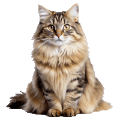

História e origem
O Siberiano é uma raça centenária de gato doméstico na Rússia e recentemente desenvolvido como uma raça formal com padrões promulgados em todo o mundo desde o final dos anos 80. Os Siberianos remontam há mil anos, pelo menos, e pensa-se que são aparentados da espécie Bosques da Noruega: as semelhanças físicas entre as duas raças são óbvias e ambas evoluíram para resistir a ambientes frios. Os Siberianos são, desde há muito, utilizados com frequência para várias tarefas na sua terra natal, a Rússia. Desde gatos de quintal a adorados animais de estimação, também marcaram presença no folclore local e nos contos de fadas. As famílias russas contam por tradição as histórias da incrível lealdade e personalidade desta raça fantástica. Eles eram descritos em histórias infantis como protetores de crianças e como seres mágicos que abriam portas para reinos além de nossos sentidos comuns.
Caracteristicas físicas
O gato Siberiano tem características de médio a grande porte, com corpo e musculatura bem fortes.Por isso, o felino demora até cinco anos para atingir a maturidade. Além disso, o peito e as pernas dele contam com ossos resistentes e poderosos. As patas traseiras são levemente maiores do que as dianteiras para o gatinho ter ainda mais impulso na hora de pular. Por isso, uma das características dos Siberianos é dar saltos incríveis em lugares bem altos. Os siberianos expressam os três tipos naturais de pêlo felino. Essas três camadas protegem o gato dos extremos climáticos russos e fornecem hoje um casaco resistente e fácil de cuidar. A pele é texturizada, mas brilhante, o que diminui a ocorrência de fosqueamento. Como na maioria das outras raças de gatos, as variedades de cores variam e todas as cores, como malhado, sólido, carapaça de tartaruga e colorpoint, são geneticamente possíveis. A raça de gato siberiano não possui padrões ou cores de peles incomuns, distintas ou únicas. A maioria dos criadores, entusiastas, organizações, registros internacionais como TICA e WCF e registros nacionais aceita a coloração de pontos como natural. No entanto, os siberianos de ponto de cor são classificados como uma raça separada.
Estimativa de peso
♂ MACHO: 7 a 10 kg. ♀ FÊMEA: 4,5 a 6 kg.
Principais cuidados
- Escovação de pelos
- Higiene básica
- Atividade física
- Corte da unhas
- Alimentação balanceada
- Checkup no veterinário
Siberianos são mesmo hipoalergênicos?
Nenhum gato pode ser considerado verdadeiramente hipoalergénico. No entanto, algumas evidências por comprovar sugerem que a raça Siberiana pode não provocar reações tão fortes em pessoas com alergias como outras raças. Isso poderá ser porque os Siberianos têm níveis mais baixos da proteína que causa alergia na sua saliva e pele do que outros gatos, mas os cientistas ainda estão a investigar este fenomeno.